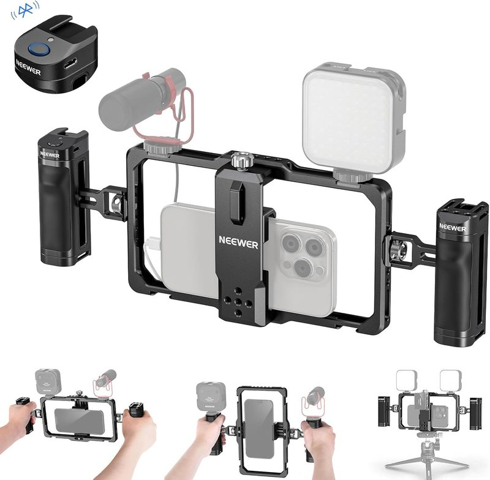
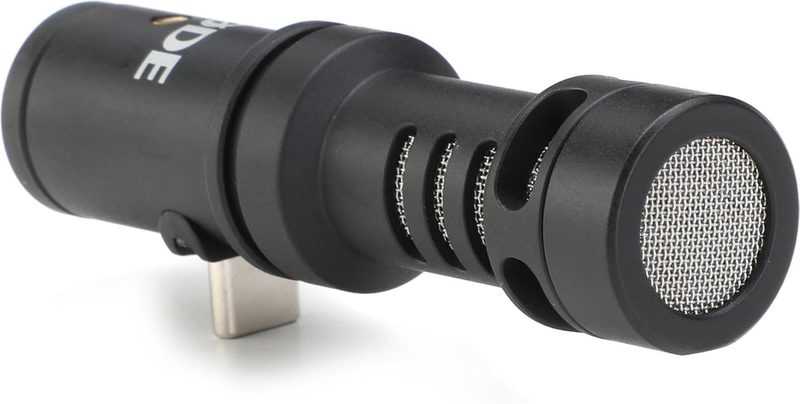
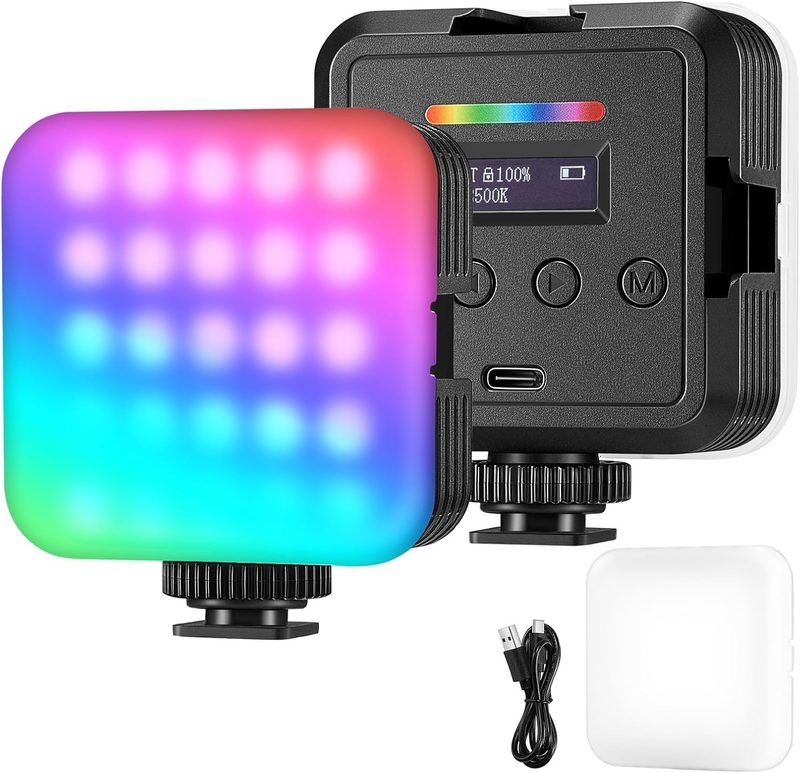

How to Set Up an iPhone Cinematic Video Rig for Under $150
Last updated: August 24, 2026 · Research-based guide · techpicksio.com
Updated: August 2026 | Budget Filmmaking

The Full $150 Cage + Mic + Light Kit
Best for anyone still shooting handheld on a bare phone: this three-piece build fixes the three things viewers notice first — shaky framing, echoey audio, and flat indoor light — for less than the cost of a single mid-range lens filter. Buy all three together (see the bundle pitch below) and every mount lines up on the first try.
- Total cost
- ~$120–140
- Components
- Cage + mic + light
- Setup time
- Under 5 minutes
Why Build a Modular iPhone Video Rig?
While modern smartphones shoot incredible 4K ProRes video, hand-holding a slick glass phone leads to shaky footage, poor muffled audio, and flat lighting. Building a modular rig gives you physical handgrips for stabilization and mounting points (cold shoes and 1/4"-20 threads) to attach professional accessories.
1. Core Foundation
The Neewer Universal Phone Cage wraps around your phone to protect it while giving you dual handgrips for smooth panning movements.
Check Live Price on Amazon →
2. Clean Audio
Upgrading to an external directional microphone eliminates ambient background noise and room echo.
Check Live Price on Amazon →
3. Portable Lighting
A bi-color pocket LED panel fills in harsh shadows on face shots and maintains subject clarity in low-light environments.
Check Live Price on Amazon →Step-by-Step: Assembling the Rig
Order matters here. Building the rig in this sequence avoids the most common frustration first-timers run into: mounting an accessory before the cage is actually secure on the phone.
- Mount the phone in the cage first, before attaching anything else. Open the adjustable clamp fully, center your phone (case on or off, depending on thickness), and tighten evenly from both sides so the phone doesn't sit crooked in the frame.
- Attach the microphone to the top cold shoe, not the side. A top-mounted mic points toward your subject's mouth regardless of how you're holding the rig, while a side mount can end up aimed at your own hand.
- Set the LED panel to a lower brightness than you think you need. Mobile phone sensors handle highlights poorly; a light that looks dim to your eye in a bright room is often already enough on camera. Start around 30-40% output and adjust up only if footage looks flat.
- Route cables through the cage's built-in channels before you start shooting, not after. A USB-C mic cable flopping in front of the lens is the single most common rookie mistake in handheld phone rigs.
- Do a 10-second test clip walking normally before committing to a full shoot. This catches loose clamp screws, mic cable rattle, and light wobble while it's still easy to fix.
When to Upgrade Past This Setup
This $150 kit covers the fundamentals, but it has real limits. If you're regularly shooting handheld walking shots, you'll eventually want a gimbal rather than relying on the cage's grips alone for stabilization — a rigid cage helps with framing consistency but doesn't actively counteract shake the way a gimbal does. If you're shooting interviews rather than solo pieces-to-camera, a single directional mic on the rig won't isolate two speakers well; a wireless lavalier system (like the comparisons in our Rode Wireless Micro vs. DJI Mic Mini guide) is the next logical purchase. And if you're shooting outdoors in daylight, the pocket LED becomes mostly irrelevant — the money is better spent on an ND filter or a phone lens attachment at that point.
Summary Budget Breakdown
| Component | Role | Est. Price | Action |
|---|---|---|---|
| Neewer Phone Cage | Stabilization & Mounting Base | $40 | Check Live Price |
| Compact Video Mic | Directional Audio Upgrade | $45 | Check Live Price |
| Mini LED Light | Subject Illumination | $35 | Check Live Price |
Buy the Kit Together, Not One Piece at a Time
These three were picked as a set on purpose. The cage's cold-shoe mounts are sized for exactly this class of compact mic and light, so you're not gambling on a mismatched thread pitch or a mic that hangs off-balance. Order all three in one Amazon session and your rig arrives ready to assemble the same day — no second order two weeks later because the light you bought separately doesn't fit the mount.
Total for the complete kit runs about $120–140 depending on current pricing — still well under the $150 target with room for a memory card or a cheap tripod.
Each link opens its own Amazon listing — Amazon doesn't support a single checkout link for items from different sellers, so add all three to your cart before checking out.
Frequently Asked Questions
What do I actually need to start filming video on a phone?
Three things beyond the phone: something to stabilize your grip (a cage or rig), an external microphone, and a light for indoor or low-light shooting. Audio is usually the biggest visible upgrade, since phone microphones pick up room echo and wind badly.
Can you really build a usable phone video rig for under $150?
Yes — buy a cage, a compact directional mic and a pocket LED panel rather than premium versions of any one of them. You will give up battery life and build quality against higher-end gear, and that is the correct trade at this budget: the jump from a bare phone to this three-piece kit is far bigger than the jump from this kit to gear costing three times as much.
Should I upgrade the microphone or the light first?
Buy the microphone first. This isn't close: viewers forgive imperfect lighting and abandon videos over bad audio, and phone mics fail at echo and wind in ways no edit reliably fixes. Light second, once the audio is solved.
What order should I assemble a phone rig in?
Mount the phone in the cage first and tighten the clamp evenly, then attach the microphone to the top cold shoe, then the light. Route cables through the cage channels before shooting so nothing hangs in front of the lens.
Related Guides
- Best ND Filters & Anamorphic Lenses for Phones (2026)
- 5 Best Wireless Lavalier Mics Under $100
- 5 Best iPhone Video Cages for Mobile Filmmaking (2026)
- 5 Best Budget LED Video Lights for Mobile Creators
- 5 Best External SSDs for ProRes 4K Mobile Video
- Rode Wireless Micro vs. DJI Mic Mini: Which Is Better?